1 えのん
1/21｜2025/11/30
37JNU
多了哪些牌
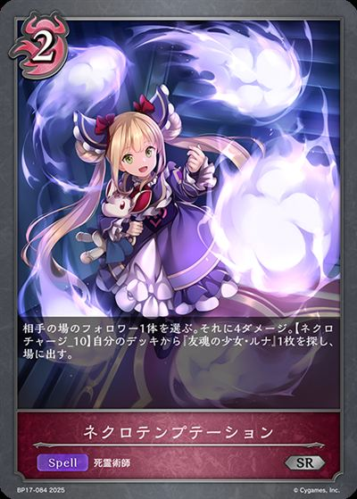
+3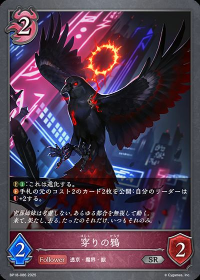
+2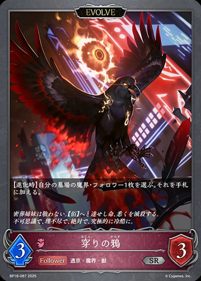
+1 +1
+1少了哪些牌
-3 -3-1
-3-1
-3-1 主BP17-073/BP17-SL17/BP17-SP01/BP17-U07：友魂的少女·露娜主卡组 × 3主BP13-076/EBD03-008/PR-351：一刀の幽鬼・カゲロウ主卡组 × 2
主BP17-073/BP17-SL17/BP17-SP01/BP17-U07：友魂的少女·露娜主卡组 × 3主BP13-076/EBD03-008/PR-351：一刀の幽鬼・カゲロウ主卡组 × 2 主BP13-081/BP13-P19/EBD03-014：魂の一刀主卡组 × 2
主BP13-081/BP13-P19/EBD03-014：魂の一刀主卡组 × 2 主BP14-070/BP14-SL14：憧憬的飞跃·铸流岐主卡组 × 3
主BP14-070/BP14-SL14：憧憬的飞跃·铸流岐主卡组 × 3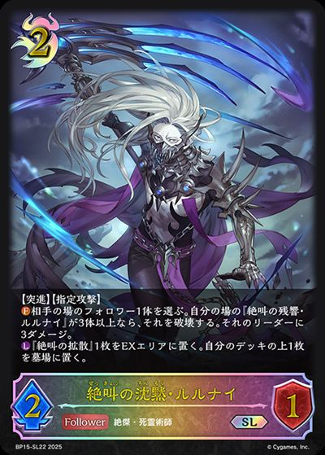
主BP15-078/BP15-SL22/EBD03-003：绝叫的沉默·鲁鲁纳伊主卡组 × 3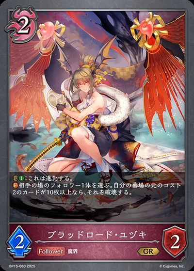
主BP15-080/BP15-P17：ブラッドロード・ユヅキ主卡组 × 3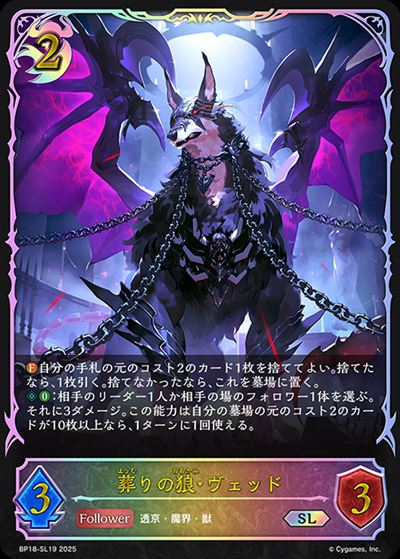
主BP18-079/BP18-SL19：送葬之狼·维德主卡组 × 3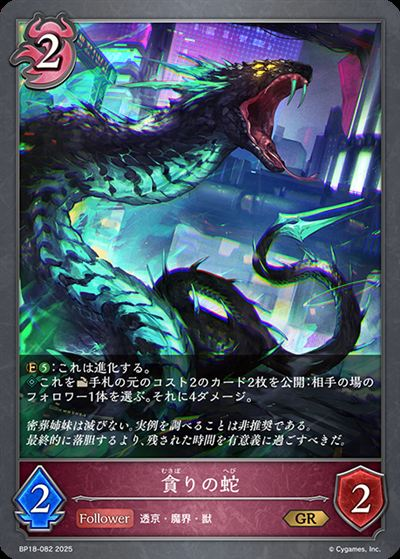
主BP18-082/BP18-P32：贪求之蛇主卡组 × 3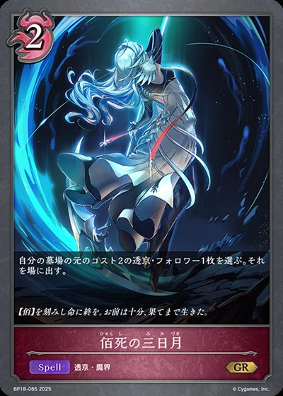
主BP18-085/BP18-P34：佰死之新月主卡组 × 3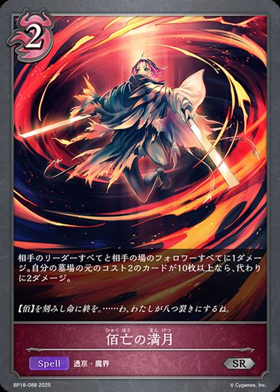
主BP18-088/BP18-P37：佰亡之满月主卡组 × 3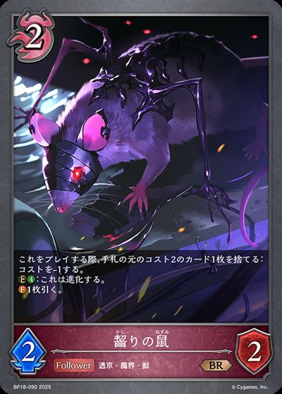
主BP18-090/BP18-P39：啮咬之鼠主卡组 × 3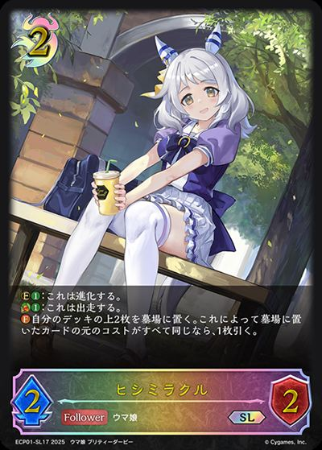
主ECP01-037/ECP01-SL17/ECP01-SSP17：ヒシミラクル主卡组 × 3主SP01-045/SP01-SL45/SP01-SP30/SP01-SP31/SP01-U28：不可思议的蓝天·艾莉丝主卡组 × 3 主BP18-077/BP18-SL17/PR-482：佰死与佰亡之六铭传·伊尔斯&乌尔斯主卡组 × 3
主BP18-077/BP18-SL17/PR-482：佰死与佰亡之六铭传·伊尔斯&乌尔斯主卡组 × 3 进BP14-071/BP14-SL15/PR-386：乐园的终焉·铸流岐进化 × 2
进BP14-071/BP14-SL15/PR-386：乐园的终焉·铸流岐进化 × 2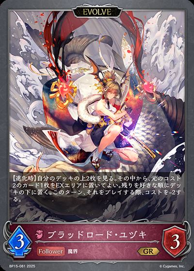
进BP15-081/BP15-P18：ブラッドロード・ユヅキ进化 × 3 进BP18-078/BP18-SL18/BP18-U05：佰死与佰亡之六铭传·伊尔斯&乌尔斯进化 × 3
进BP18-078/BP18-SL18/BP18-U05：佰死与佰亡之六铭传·伊尔斯&乌尔斯进化 × 3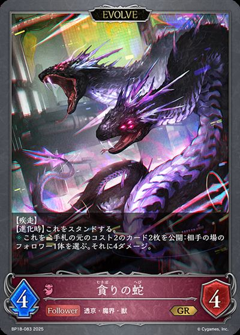
进BP18-083/BP18-P33：贪求之蛇进化 × 1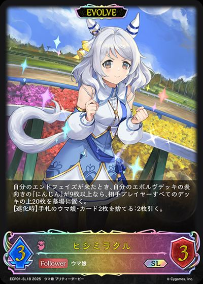
进ECP01-038/ECP01-SL18/ECP01-SP18/ECP01-SSP18：ヒシミラクル进化 × 1
+3
+2
+1+1-3-1 +3
+3 +3+2+1+1-3-1+3+3+2+1+1-3-1+3
+3+2+1+1-3-1+3+3+2+1+1-3-1+3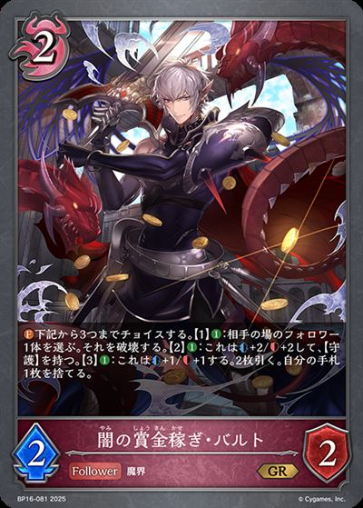
+3+3 +2
+2 +2+1-3-2-2-1-1-1-1+3+3+3
+2+1-3-2-2-1-1-1-1+3+3+3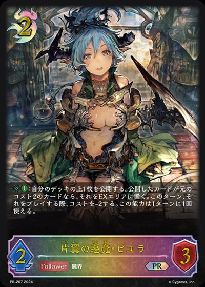
+3+3+3+1+1-3-3-3-3-2-2-2-1-1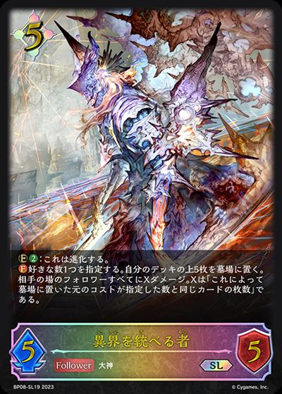
+3 +3
+3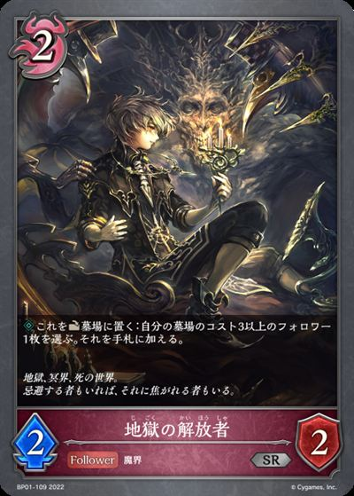
+2+2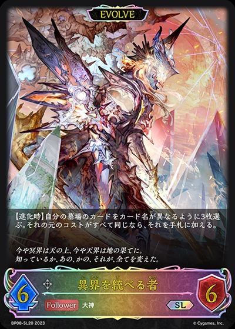
+1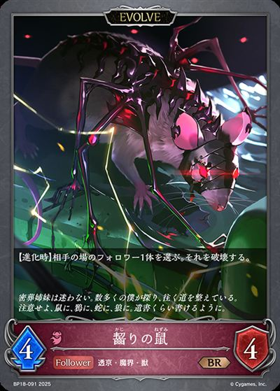
+1+1-3-3-3-1-1-1-1+3+3+3+2+2+2+1+1+1-3-3-3-2-2-2-1-1-1+3+3+1-3-1+3+3+2+2+1+1+1-3-3-3-3-1-3-1 +3
+3 +2+1
+2+1 +1+1-3-1-1-1-1-1+3
+1+1-3-1-1-1-1-1+3 +3+3+3
+3+3+3 +3+2+2+1+1
+3+2+2+1+1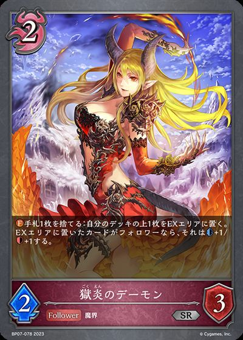
+1 +1-3-3-3-3-3-3-3-2-2-1+3+1+1+1+1+1+1-3-3-1-1-1-1-1-1+3+1+1+1-3-1-1-1+3
+1-3-3-3-3-3-3-3-2-2-1+3+1+1+1+1+1+1-3-3-1-1-1-1-1-1+3+1+1+1-3-1-1-1+3 +3+2+1+1-3-1+3+3+2+2+2+2
+3+2+1+1-3-1+3+3+2+2+2+2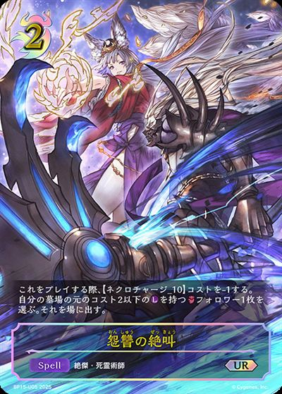
+1-3-2-2-1-1-1-1-1+3+3+3+2+2+1+1-3-1-1-1 +3
+3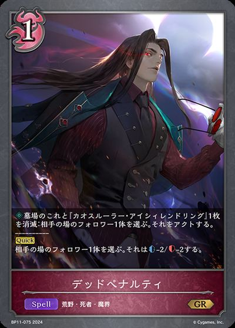
+3+3 +3
+3 +3+3
+3+3 +2+2+2-3-3-3-3-3-2-2-1-1-1-1-1+3+3+3+3+3+2+2+1-3-3-3-2-2-1-1-1-1+3
+2+2+2-3-3-3-3-3-2-2-1-1-1-1-1+3+3+3+3+3+2+2+1-3-3-3-2-2-1-1-1-1+3 +3+3
+3+3 +3+2
+3+2 +2+2+1+1-3-3-3-3-3-2-2-1-1-1-1+3
+2+2+1+1-3-3-3-3-3-2-2-1-1-1-1+3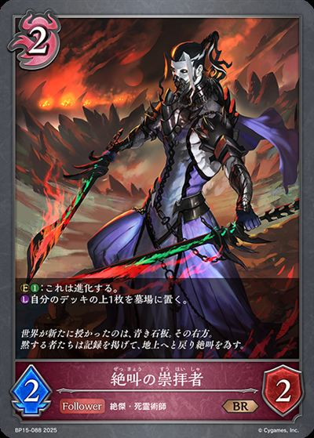
+3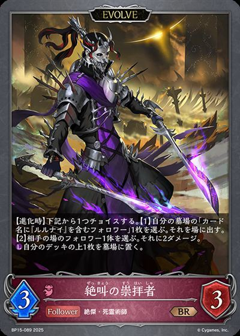
+2+2+2+2+1+1+1-3-2-2-2-1-1-1-1-1+3+3+3+3 +3+2+1+1+1+1
+3+2+1+1+1+1 +1+1+1-3-3-3-2-2-2-1-1-1-1-1-1
+1+1+1-3-3-3-2-2-2-1-1-1-1-1-1 +3+3+3
+3+3+3 +3+3+2+1-3-3-2-2-1-1-1-1-1+3
+3+3+2+1-3-3-2-2-1-1-1-1-1+3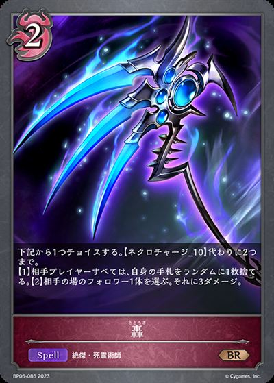
+3+3+2+2+2+2+1+1+1+1-3-3-2-2-1-1-1-1-1-1-1-1+3+3+2+1+1+1+1+1-3-1-1-1-1-3-1-1-1+2+1+1+1+1-3-3-3-2+3+2+1-2-2-1-1+3+3+3+2+2+2-3-3-2-2-1-1+3+3+2+2+1-3-2-1-1-1+2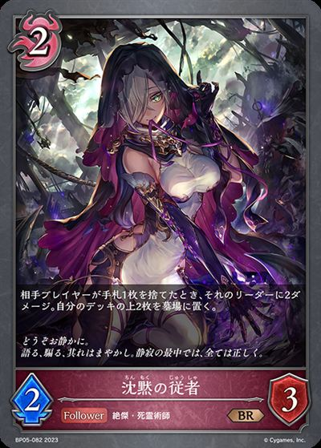
+2+2+1+1+1-3-3-2-2-1-1-1-1-1+3+3+3+3+2+2+2+1+1+1+1-3-3-2-2-2-1-1-1-1-1-1-1+3+3+3 +2+2+2
+2+2+2 +2
+2 +2-3-2-2-1-1-1-1-1-1+3+3+1+1+1+1+1-3-2-1-1-1-1-1+3+3+3+3+3+2+2+2+2+1+1-3-3-3-3-3-3-2-2-1-1-1+3+3+2+2+2+2+2+2+1-3-2-2-1-1-1-1-1-1-1-1-1+3+3+2+2+2+2+2-3-2-2-1-1-1-1-1-1+2+2+1-3-1-1-1-1+2+2+1-2-2-1-1-1-1+3+3+3+2+1+1+1+1+1+1+1-3-3-3-3-1-1-1+3+3+1-3-1+1-3-1-1+3+3+1+1-3-1-1+3+2+2+2+2+1+1+1-3-1-1-1-1-1
+2-3-2-2-1-1-1-1-1-1+3+3+1+1+1+1+1-3-2-1-1-1-1-1+3+3+3+3+3+2+2+2+2+1+1-3-3-3-3-3-3-2-2-1-1-1+3+3+2+2+2+2+2+2+1-3-2-2-1-1-1-1-1-1-1-1-1+3+3+2+2+2+2+2-3-2-2-1-1-1-1-1-1+2+2+1-3-1-1-1-1+2+2+1-2-2-1-1-1-1+3+3+3+2+1+1+1+1+1+1+1-3-3-3-3-1-1-1+3+3+1-3-1+1-3-1-1+3+3+1+1-3-1-1+3+2+2+2+2+1+1+1-3-1-1-1-1-1 +3
+3 +3
+3 +3+3+3+3+3
+3+3+3+3+3 +2+1+1+1+1-3-2-2-2-2-1+3+3+2+1+1-3-1+3+2+1+1+1-3-1-1-1-1-1+2+2+2+1-3-3-2-2-1-1-1+3+3+2+1+1-3-1
+2+1+1+1+1-3-2-2-2-2-1+3+3+2+1+1-3-1+3+2+1+1+1-3-1-1-1-1-1+2+2+2+1-3-3-2-2-1-1-1+3+3+2+1+1-3-1 +3
+3 +3+3
+3+3 +2+2+1+1-3-3-3-1-1-1-1-1-1+3+3+3+2+1-3-1-1-1+3+3+2+2+1+1+1+1+1-3-2-2-2-1-1-1-1-1+3+3+2+2+1-3-1-1
+2+2+1+1-3-3-3-1-1-1-1-1-1+3+3+3+2+1-3-1-1-1+3+3+2+2+1+1+1+1+1-3-2-2-2-1-1-1-1-1+3+3+2+2+1-3-1-1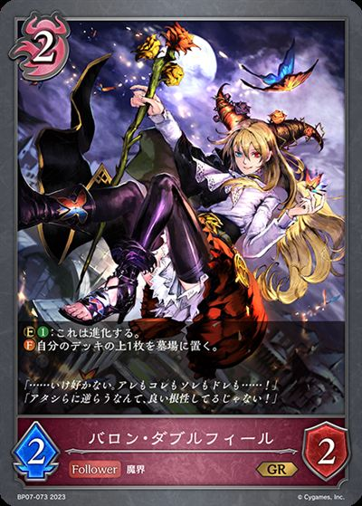
+3+3+3+3+3 +2+2+2+2+1+1-3-3-3-3-3-2-2-2-1-1-1-1+3+3+1+1+1+1+1-3-2-1-1-1-1-1+3+3
+2+2+2+2+1+1-3-3-3-3-3-2-2-2-1-1-1-1+3+3+1+1+1+1+1-3-2-1-1-1-1-1+3+3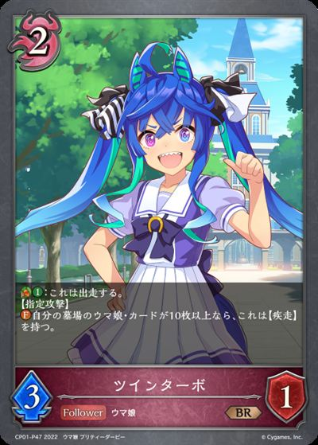
+3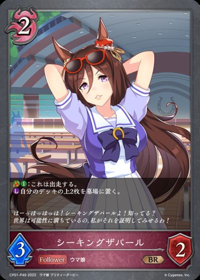
+3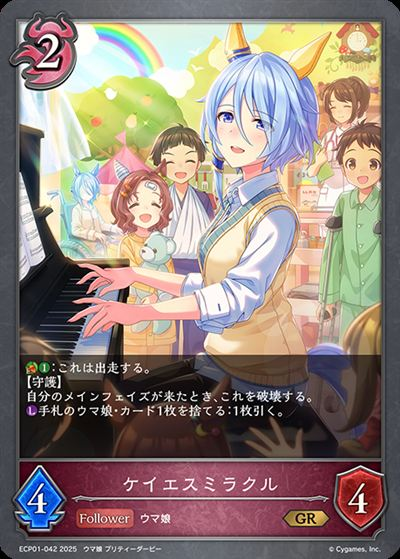
+3+2+2+2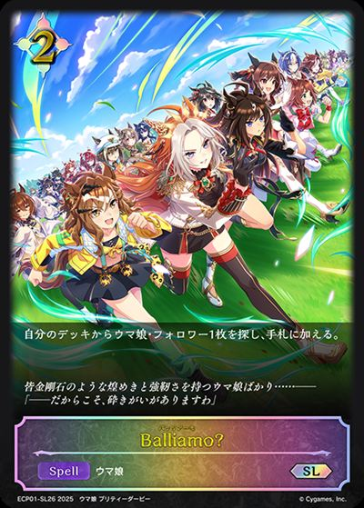
+2 +1+1-3-3-3-3-3-3-3-2-1+3+2+1+1+1+1+1-3-3-3-1-1-1-1+3+3+3+3+2+2+2+1+1+1-3-3-3-2-2-1-1-1-1-1+3+2+2+2+2+1+1+1-3-1-1-1-1-1+3+2+2+1+1+1-3-3-1-1-1-1+3+2+2+1+1+1+1+1-3-2-2-1-1-1-1-1+3+2+2+1+1+1+1+1-3-2-2-1-1-1-1-1-3-1+3+1+1+1+1+1+1+1+1-3-3-3-1-1-1-1-1+3+3+1+1-3-1-1+3+2+1+1-3-1
+1+1-3-3-3-3-3-3-3-2-1+3+2+1+1+1+1+1-3-3-3-1-1-1-1+3+3+3+3+2+2+2+1+1+1-3-3-3-2-2-1-1-1-1-1+3+2+2+2+2+1+1+1-3-1-1-1-1-1+3+2+2+1+1+1-3-3-1-1-1-1+3+2+2+1+1+1+1+1-3-2-2-1-1-1-1-1+3+2+2+1+1+1+1+1-3-2-2-1-1-1-1-1-3-1+3+1+1+1+1+1+1+1+1-3-3-3-1-1-1-1-1+3+3+1+1-3-1-1+3+2+1+1-3-1| 图片 | 平均张数 | 使用率 | 携带最好成绩 | 不携带最好成绩 | 1张比例 | 2张比例 | 3张比例 |
|---|---|---|---|---|---|---|---|
| 3.00 | 100.0% | 9 9/2486W7MA |
无 | 0.0% | 0.0% | 100.0% | |
| 2.96 | 98.6% | 9 9/2486W7MA |
6 6/131PM7N |
0.0% | 0.0% | 98.6% | |
| 2.96 | 98.6% | 9 9/2486W7MA |
6 6/276YB8E |
0.0% | 0.0% | 98.6% | |
| 2.64 | 94.2% | 9 9/2486W7MA |
4 4/2225WNU |
0.0% | 18.8% | 75.4% | |
|
2.57 | 94.2% | 9 9/2486W7MA |
8 8/595WJVL |
2.9% | 20.3% | 71.0% |
| 2.43 | 92.8% | 9 9/2486W7MA |
3 3/2254EC0 |
7.2% | 20.3% | 65.2% | |
|
2.62 | 91.3% | 9 9/2486W7MA |
3 3/216HARA |
1.4% | 8.7% | 81.2% |
| 2.49 | 88.4% | 9 9/2486W7MA |
1 1/2137JNU |
1.4% | 13.0% | 73.9% | |
|
1.96 | 68.1% | 9 9/2486W7MA |
8 8/595WJVL |
2.9% | 2.9% | 62.3% |
|
1.96 | 66.7% | 2 2/261H5CY |
9 9/2486W7MA |
0.0% | 4.3% | 62.3% |
|
1.72 | 63.8% | 9 9/2486W7MA |
2 2/156Z8ZL |
1.4% | 15.9% | 46.4% |
|
1.29 | 63.8% | 9 9/2486W7MA |
2 2/156Z8ZL |
4.3% | 53.6% | 5.8% |
| 1.26 | 63.8% | 1 1/2137JNU |
9 9/2486W7MA |
17.4% | 30.4% | 15.9% | |
| 1.55 | 58.0% | 9 9/2486W7MA |
2 2/261H5CY |
1.4% | 15.9% | 40.6% | |
|
1.30 | 44.9% | 2 2/261H5CY |
9 9/2486W7MA |
0.0% | 4.3% | 40.6% |
| 1.10 | 40.6% | 9 9/2486W7MA |
2 2/261H5CY |
4.3% | 2.9% | 33.3% | |
|
0.65 | 36.2% | 2 2/156Z8ZL |
9 9/2486W7MA |
8.7% | 26.1% | 1.4% |
| 0.91 | 31.9% | 8 8/595WJVL |
9 9/2486W7MA |
0.0% | 4.3% | 27.5% | |
| 0.55 | 20.3% | 3 3/2254EC0 |
9 9/2486W7MA |
1.4% | 2.9% | 15.9% | |
| 0.41 | 20.3% | 1 1/2137JNU |
9 9/2486W7MA |
7.2% | 5.8% | 7.2% | |
| 0.54 | 18.8% | 2 2/156Z8ZL |
9 9/2486W7MA |
0.0% | 2.9% | 15.9% | |
| 0.23 | 18.8% | 3 3/2254EC0 |
9 9/2486W7MA |
14.5% | 4.3% | 0.0% | |
|
0.43 | 14.5% | 9 9/2486W7MA |
1 1/2137JNU |
0.0% | 0.0% | 14.5% |
|
0.20 | 13.0% | 6 6/3062432 |
9 9/2486W7MA |
7.2% | 4.3% | 1.4% |
|
0.13 | 10.1% | 4 4/2225WNU |
9 9/2486W7MA |
8.7% | 0.0% | 1.4% |
|
0.20 | 7.2% | 3 3/2254EC0 |
9 9/2486W7MA |
0.0% | 1.4% | 5.8% |
|
0.19 | 7.2% | 4 4/176UKH0 |
9 9/2486W7MA |
0.0% | 2.9% | 4.3% |
|
0.17 | 7.2% | 6 6/276YB8E |
9 9/2486W7MA |
0.0% | 4.3% | 2.9% |
|
0.17 | 7.2% | 4 4/2225WNU |
9 9/2486W7MA |
0.0% | 4.3% | 2.9% |
| 0.16 | 5.8% | 6 6/256LZGS |
9 9/2486W7MA |
0.0% | 1.4% | 4.3% | |
|
0.16 | 5.8% | 2 2/114LQF8 |
9 9/2486W7MA |
0.0% | 1.4% | 4.3% |
| 0.13 | 4.3% | 6 6/235UBAS |
9 9/2486W7MA |
0.0% | 0.0% | 4.3% | |
|
0.12 | 4.3% | 4 4/2225WNU |
9 9/2486W7MA |
0.0% | 1.4% | 2.9% |
|
0.09 | 2.9% | 5 5/206ZM66 |
9 9/2486W7MA |
0.0% | 0.0% | 2.9% |
|
0.07 | 2.9% | 6 6/276YB8E |
9 9/2486W7MA |
0.0% | 1.4% | 1.4% |
| 0.06 | 2.9% | 8 8/2442CG0 |
9 9/2486W7MA |
0.0% | 2.9% | 0.0% | |
|
0.04 | 1.4% | 6 6/111XQBG |
9 9/2486W7MA |
0.0% | 0.0% | 1.4% |
| 0.04 | 1.4% | 8 8/135G6TL |
9 9/2486W7MA |
0.0% | 0.0% | 1.4% | |
|
0.04 | 1.4% | 6 6/131PM7N |
9 9/2486W7MA |
0.0% | 0.0% | 1.4% |
| 0.04 | 1.4% | 6 6/276YB8E |
9 9/2486W7MA |
0.0% | 0.0% | 1.4% | |
|
0.04 | 1.4% | 6 6/131PM7N |
9 9/2486W7MA |
0.0% | 0.0% | 1.4% |
|
0.04 | 1.4% | 6 6/276YB8E |
9 9/2486W7MA |
0.0% | 0.0% | 1.4% |
|
0.04 | 1.4% | 2 2/85ZJWU |
9 9/2486W7MA |
0.0% | 0.0% | 1.4% |
|
0.04 | 1.4% | 4 4/176UKH0 |
9 9/2486W7MA |
0.0% | 0.0% | 1.4% |
| 0.04 | 1.4% | 5 5/856PN2 |
9 9/2486W7MA |
0.0% | 0.0% | 1.4% | |
| 0.04 | 1.4% | 5 5/856PN2 |
9 9/2486W7MA |
0.0% | 0.0% | 1.4% | |
| 0.04 | 1.4% | 5 5/856PN2 |
9 9/2486W7MA |
0.0% | 0.0% | 1.4% | |
|
0.03 | 1.4% | 6 6/111XQBG |
9 9/2486W7MA |
0.0% | 1.4% | 0.0% |
|
0.03 | 1.4% | 3 3/82KX9C |
9 9/2486W7MA |
0.0% | 1.4% | 0.0% |
|
0.03 | 1.4% | 3 3/82KX9C |
9 9/2486W7MA |
0.0% | 1.4% | 0.0% |
|
0.03 | 1.4% | 6 6/131PM7N |
9 9/2486W7MA |
0.0% | 1.4% | 0.0% |
| 0.03 | 1.4% | 5 5/856PN2 |
9 9/2486W7MA |
0.0% | 1.4% | 0.0% | |
|
0.01 | 1.4% | 2 2/114LQF8 |
9 9/2486W7MA |
1.4% | 0.0% | 0.0% |
| 0.01 | 1.4% | 4 4/2225WNU |
9 9/2486W7MA |
1.4% | 0.0% | 0.0% | |
| 0.01 | 1.4% | 7 7/345AHTN |
9 9/2486W7MA |
1.4% | 0.0% | 0.0% |
| 图片 | 平均张数 | 使用率 | 携带最好成绩 | 不携带最好成绩 | 1张比例 | 2张比例 | 3张比例 |
|---|---|---|---|---|---|---|---|
| 2.61 | 98.6% | 9 9/2486W7MA |
6 6/131PM7N |
0.0% | 34.8% | 63.8% | |
|
1.61 | 94.2% | 9 9/2486W7MA |
8 8/595WJVL |
30.4% | 60.9% | 2.9% |
|
2.39 | 91.3% | 9 9/2486W7MA |
3 3/216HARA |
1.4% | 31.9% | 58.0% |
| 0.80 | 63.8% | 1 1/2137JNU |
9 9/2486W7MA |
47.8% | 15.9% | 0.0% | |
| 0.43 | 40.6% | 9 9/2486W7MA |
1 1/2137JNU |
37.7% | 2.9% | 0.0% | |
|
0.59 | 36.2% | 2 2/156Z8ZL |
9 9/2486W7MA |
14.5% | 20.3% | 1.4% |
| 0.38 | 31.9% | 9 9/2486W7MA |
2 2/261H5CY |
27.5% | 2.9% | 1.4% | |
| 0.32 | 31.9% | 3 3/2254EC0 |
9 9/2486W7MA |
31.9% | 0.0% | 0.0% | |
| 0.20 | 18.8% | 3 3/2254EC0 |
9 9/2486W7MA |
17.4% | 1.4% | 0.0% | |
|
0.14 | 7.2% | 4 4/176UKH0 |
9 9/2486W7MA |
0.0% | 7.2% | 0.0% |
|
0.12 | 5.8% | 2 2/114LQF8 |
9 9/2486W7MA |
0.0% | 5.8% | 0.0% |
| 0.10 | 5.8% | 6 6/256LZGS |
9 9/2486W7MA |
1.4% | 4.3% | 0.0% | |
|
0.09 | 2.9% | 5 5/206ZM66 |
9 9/2486W7MA |
0.0% | 0.0% | 2.9% |
|
0.04 | 2.9% | 6 6/276YB8E |
9 9/2486W7MA |
1.4% | 1.4% | 0.0% |
|
0.04 | 1.4% | 6 6/111XQBG |
9 9/2486W7MA |
0.0% | 0.0% | 1.4% |
|
0.04 | 1.4% | 6 6/131PM7N |
9 9/2486W7MA |
0.0% | 0.0% | 1.4% |
|
0.03 | 1.4% | 8 8/135G6TL |
9 9/2486W7MA |
0.0% | 1.4% | 0.0% |
|
0.03 | 1.4% | 3 3/82KX9C |
9 9/2486W7MA |
0.0% | 1.4% | 0.0% |
|
0.01 | 1.4% | 2 2/85ZJWU |
9 9/2486W7MA |
1.4% | 0.0% | 0.0% |
|
0.01 | 1.4% | 5 5/856PN2 |
9 9/2486W7MA |
1.4% | 0.0% | 0.0% |